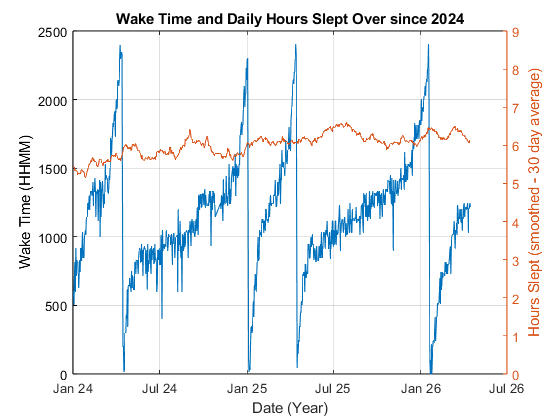
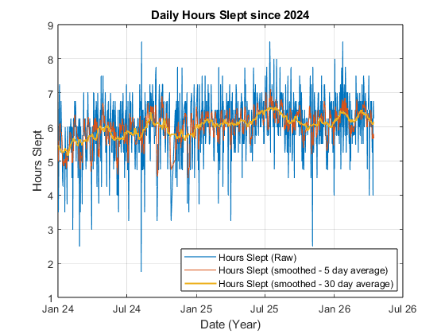
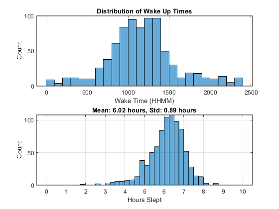
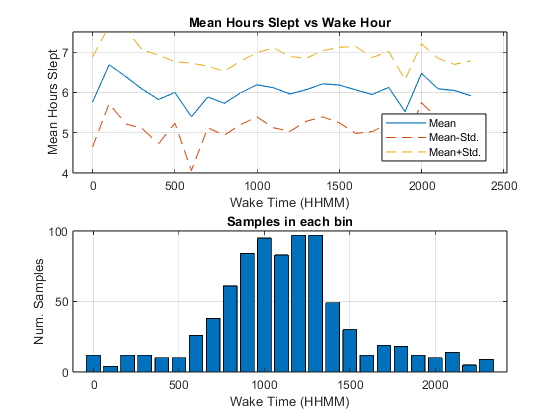

Contents
Wake Times and Hours Slept Over Time


Histogram of Wake Times
Each bin includes the leading edge, but does not include the trailing edge, except for the last bin which includes both edges.

One Hour Bins
